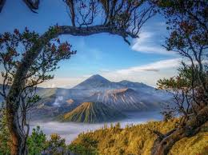

Bali
Bali adalah sebuah provinsi
di Indonesia
yang terletak pada bagian
barat Kepulauan
Nusa Tenggara dan beribu kota di Kota Denpasar.

Bromo
Gunung Bromo atau dalam bahasa Tengger dieja "Brama",
juga disebut Kaldera Tengger, adalah sebuah gunung berapi
aktif di Jawa Timur, Indonesia. Gunung ini memiliki ketinggian
2.614 meter di atas permukaan laut

Raja Ampat
Kepulauan Raja Ampat adalah gugusan kepulauan yang berlokasi di barat bagian Semenanjung Kepala Burung (Vogelkoop) Pulau Papua.